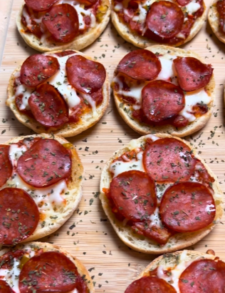

Pepperoni Pizza Bagels

Description
These pizza bagels are a homemade take on a frozen favorite, with high protein and low fat ingredients.
Ingredients
- 10 English muffins
- 400g Marinara
- 50g "umami" black garlic sauce (found at Whole Foods) or low sodium soy sauce
- 33g parmigiano reggiano
- 60g chopped hot peppers
- 200g 2% Mozzarella
- 60 slices turkey pepperoni
- 33g hot honey
Steps
- Preheat your oven to 450°F
- Split and lightly spray each half of the English muffins with oil spray, and place them on a baking sheet. Bake in the oven for approximately 5 minutes, or until crispy.
- Once the English muffins are done, remove them from the oven and add marinara sauce, diced peppers, shredded mozzarella cheese, and pepperoni slices to each half.
- Drizzle some hot honey over the top of each muffin half, and then place them back in the oven for another 5 minutes, or until the cheese is melted and bubbly.
- Remove them from the oven and top with freshly grated parmesan cheese, oregano, and basil. Each "serving" is 4 pizzas - separate in to your containers of choice, and store frozen.